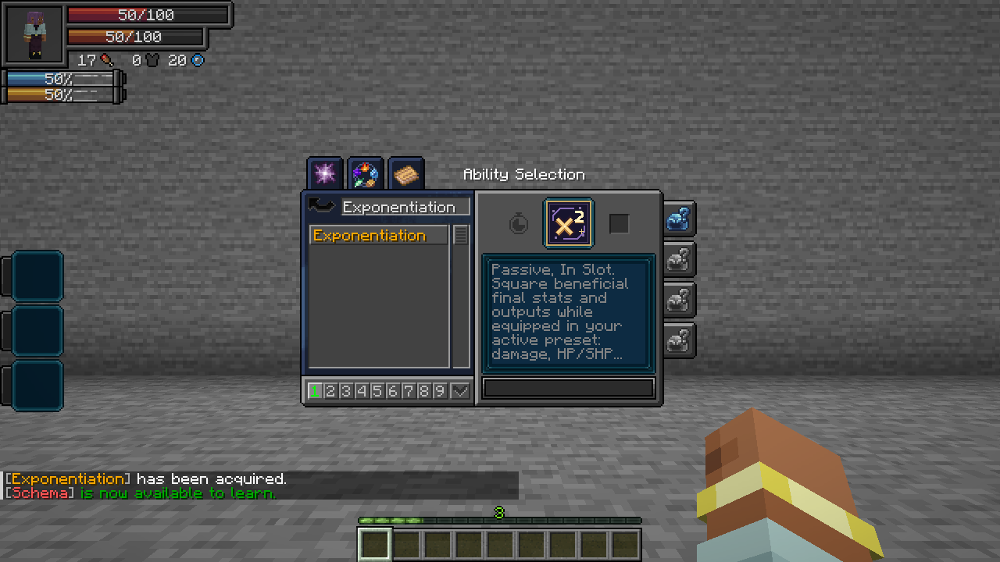

On this page
Exponentiation · Passive, In Slot
Learn the skill and equip it in your current Tensura skill preset. Supported beneficial final values become x^1.2: 10 damage becomes about 15.85, 5 healing becomes 6.90, and 4 attack speed becomes 5.28. Owning the skill without equipping it, an unfinished learning entry or an inactive preset gives no bonus.
Maximum aura/magicules and movement are excluded. Other capacity bonuses use the same ^1.2 bonus. Attack speed, mining speed and chant speed are included. Values of 1 or less stay unchanged so fractions do not become weaker. Chances keep their native maximum, item drops keep normal stack limits, and extremely large numbers remain finite.
Watch/download the recorded 1.8.1 multiplier preview. Recorded for 1.8.1: its ^2 values, capacity and permanent resource-gain sections predate the current ^1.2 rules. The tables below describe the current release. This animated reference uses native runtime attribute measurements and tested output examples. Test inputs illustrate the power operation; they are not starting stats.

Outputs and gains
| Value | What changes |
|---|---|
| Outgoing HP damage | Raises to ^1.2 the completed damage after normal modifiers and reductions; retains the original damage type and immunity rules |
| Direct SHP damage | Raises to ^1.2 the completed spiritual damage after native resistance and protection |
| HP healing | Raises to ^1.2 the final positive healing amount, including supported direct healing and Schema bonuses |
| SHP healing | Raises to ^1.2 positive SHP recovery; respects the effective maximum |
| Aura / magicule recovery | Raises to ^1.2 the completed positive resource gain, including native regeneration, biome input and sleep recovery |
| Total EP awards | Raises to ^1.2 the native kill EP award once before ordinary race/alignment splitting, existing gain modifiers and native gain caps. A 9 EP award becomes about 13.97 EP, then splits normally. |
| Separate aura / magicule grants | No independent permanent-pool multiplier; direct permanent grants retain their ordinary amounts. Current-resource recovery remains enhanced. |
| Learning / mastery | Raises to ^1.2 the awarded points after native point modifiers; requirements and mastery caps stay unchanged |
| Mining speed | Raises to ^1.2 the completed block-breaking speed after tool, enchantment and skill modifiers |
| Experience | Raises to ^1.2 positive player XP awards; does not generate extra XP orbs |
| Block / mob drops | Raises to ^1.2 each final stack quantity, capped at that item’s normal maximum stack size; one item stays one |
Damage, healing, regeneration, mining and point formulas use ordinary inputs, then apply ^1.2 once to the completed result. A normal 10-damage melee hit becomes about 15.85. The displayed attack attribute shows its empowered value. Total kill EP is enhanced once before its ordinary aura/magicule split. Maximum aura and magicules receive no multiplier. Direct administrative stat edits and fixed race starting pools retain their normal amounts. Integer XP and item counts round down after the power bonus.
Affected attributes
The following 59 native attributes are covered when their value exceeds 1. Effects must already exist on your character: Exponentiation does not grant an absent barrier, element, sense or skill. Attributes used as inputs to the output calculations above are handled at that output instead of being applied twice.
| Attribute | Exact ID |
|---|---|
| Critical Attack Chance | manascore_attribute:critical_attack_chance |
| Critical Damage Multiplier | manascore_attribute:critical_damage_multiplier |
| Armor | minecraft:generic.armor |
| Armor Toughness | minecraft:generic.armor_toughness |
| Attack Damage | minecraft:generic.attack_damage |
| Attack Speed | minecraft:generic.attack_speed |
| Mob Follow Range | minecraft:generic.follow_range |
| Luck | minecraft:generic.luck |
| Block Break Speed | minecraft:player.block_break_speed |
| Block Interaction Range | minecraft:player.block_interaction_range |
| Entity Interaction Range | minecraft:player.entity_interaction_range |
| Mining Efficiency | minecraft:player.mining_efficiency |
| Submerged Mining Speed | minecraft:player.submerged_mining_speed |
| Nametag Distance | neoforge:nametag_distance |
| Ability Learning Gain | tensura:ability_learning_gain |
| Ability Mastery Gain | tensura:ability_mastery_gain |
| Analysis Distance | tensura:analysis_distance |
| Analysis Level | tensura:analysis_level |
| Aura Regeneration Multiplier | tensura:aura_regeneration_multiplier |
| Chant Speed | tensura:chant_speed |
| Darkness Attack Boost | tensura:darkness_boost |
| Darkness Attack Resistance | tensura:darkness_resistance |
| Dodge Invulnerability | tensura:dodge_invulnerability |
| Dodge Negate Chance | tensura:dodge_negate_chance |
| Earth Attack Boost | tensura:earth_boost |
| Earth Attack Resistance | tensura:earth_resistance |
| Fire Attack Boost | tensura:flame_boost |
| Fire Attack Resistance | tensura:flame_resistance |
| Gravity Attack Boost | tensura:gravity_boost |
| Heat Sense Radius | tensura:heat_sense_radius |
| Illusion Attack Boost | tensura:illusion_boost |
| Light Attack Boost | tensura:light_boost |
| Light Attack Resistance | tensura:light_resistance |
| Lightning Attack Boost | tensura:lightning_boost |
| Magic Barrier | tensura:magic_barrier |
| Magic Interference | tensura:magic_interference |
| Magic Resistance | tensura:magic_resistance |
| Magicule Regeneration Multiplier | tensura:magicule_regeneration_multiplier |
| Auto Melee Dodge Chance | tensura:melee_dodge_chance |
| Multilayer Barrier | tensura:multilayer_barrier |
| Physical Barrier | tensura:physical_barrier |
| Presence Concealment | tensura:presence_concealment |
| Presence Sense | tensura:presence_sense |
| Presence Sense Radius | tensura:presence_sense_radius |
| Auto Projectile Dodge Chance | tensura:projectile_dodge_chance |
| Sound Attack Boost | tensura:sound_boost |
| Space Attack Boost | tensura:space_boost |
| Space Attack Resistance | tensura:space_resistance |
| Spiritual Health Regeneration | tensura:spiritual_health_regeneration |
| Water Attack Boost | tensura:water_boost |
| Water Attack Resistance | tensura:water_resistance |
| Wind Attack Boost | tensura:wind_boost |
| Wind Attack Resistance | tensura:wind_resistance |
| Maximum HP | minecraft:generic.max_health |
| Maximum SHP | tensura:max_spiritual_health |
| Maximum absorption | minecraft:generic.max_absorption |
| Oxygen bonus | minecraft:generic.oxygen_bonus |
| Water capacity | tensura:water_capacity |
| Lava capacity | tensura:lava_capacity |
Oxygen capacity: maximum air supply is raised to ^1.2 too: the normal 300-tick / 15-second pool becomes about 25.75 seconds (515 ticks) while equipped. Existing air is not instantly refilled. Oxygen conservation is a separate supported attribute. The pool survives save/reload; a full-integer field also supports larger custom air capacities; unequipping clamps it to the ordinary maximum.
Limits and exclusions
- Capacities: maximum HP, SHP, absorption, oxygen and water/lava capacity are raised to ^1.2. Maximum aura and magicules stay normal. Legacy over-cap energy reserves are clamped once on the next active tick; earned permanent pool gains remain earned.
- Movement: walking, sprinting, flying, gliding, swimming, sneaking, lava movement, jumping, step height, fall handling, knockback, dodge displacement, dash/teleport travel and body size remain unchanged. Interaction reach and sensing distance are included.
- Costs and timers: costs, cooldowns, progression requirements and drawbacks are not raised to ^1.2. Percentage-based costs still follow the resource amount their original formula uses.
- Fixed skill settings: fixed durations, radii, target counts, Fortune/enchantment levels, recipe outputs and other hard-coded skill constants are not rewritten. Prospector still surveys 32 blocks and adds Fortune III; its completed mining speed and drop quantities can benefit.
- Bounded fractions: values in 0–1, such as fractional resistance degradation, are retained. A normal 1× gain remains 1×. Probabilities expressed in percentage points can increase, up to their native chance cap.
- Preservation: equipping does not repeatedly exponentiate saved base stats or refill reserves. Unequipping restores ordinary non-energy capacities and clamps current HP/SHP as needed. Gains earned while equipped remain earned.
- Chained: the locked maximum-magicule capacity remains locked. Exponentiation does not bypass skill acquisition restrictions.
- Fusion: combining and restoring bodies transfers their existing reserves without treating the transfer as another healing/resource reward.
These tables describe the supported native attribute and output paths. An unrelated addon’s private variables, custom damage engine or separate inventory system are not automatically covered.